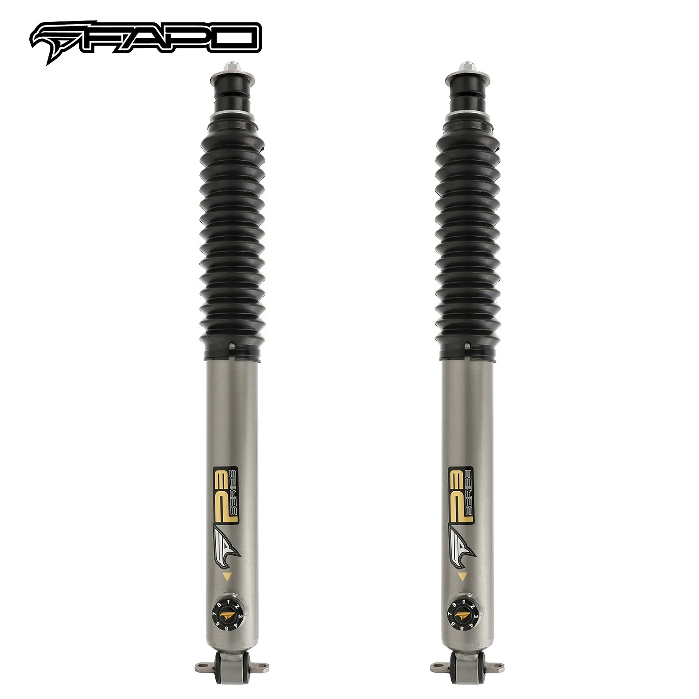

1 / 178-Stage Front 1-3 in Lift amortyzatory Do 1984-2001 Jeep Cherokee XJ PA164631
Zawartość zestawu: 2X 8-stopniowe amortyzatory przednie FAPO P3 Cechy produktu: 8-kierunkowa kontrola odbicia umożliwia precyzyjne dostrojenie do jazdy po ulicy, szlaku lub przy dużych obciążeniach Dwururowa konstrukcja 2,28 cala zapewnia o 15–20% większą pojemność oleju, co zapewnia płynną pracę na długich dystansach Tłok o średnicy 1,42 cala zapewnia do 30% większą siłę tłumienia niż standardowe amortyzatory Tłocz…
Package Includes: 2X FAPO P3 8-Stage Front Shock Absorbers Features: 8-way rebound control allows precise tuning for street, trail, or heavy loads 2.28" twin-tube design provides 15-20% more oil capacity for fade-free performance on long runs 1.42" oversized piston delivers up to 30% stronger damping force than standard shocks 0.71" chromoly steel piston rod is hardened and chrome-plated for rock-proof durability 4130 chromoly steel linkages resist bending under extreme off-road stress German Fuchs shock oil and NOK seals ensure 100,000+ mile reliability even at 248℉ Dual-layer dust seals offer double protection against mud, sand, and trail debris Front height-adjustable coilover design makes it easy to level your stance or fit larger tires Heavy-duty steel mounts are built to support bumpers, winches, and roof rack loads Rubber bushings are rated for 80,000 miles of long-life comfort and durability Default 1-year warranty for any manufacturing defect, upgrade to 2 years with our Free Extended Warranty Program
1099,99 PLN
Opis produktu
Zawartość zestawu:
- 2X 8-stopniowe amortyzatory przednie FAPO P3
Cechy produktu:
- 8-kierunkowa kontrola odbicia umożliwia precyzyjne dostrojenie do jazdy po ulicy, szlaku lub przy dużych obciążeniach
- Dwururowa konstrukcja 2,28 cala zapewnia o 15–20% większą pojemność oleju, co zapewnia płynną pracę na długich dystansach
- Tłok o średnicy 1,42 cala zapewnia do 30% większą siłę tłumienia niż standardowe amortyzatory
- Tłoczysko ze stali chromowo-molibdenowej o średnicy 0,71 cala jest hartowane i chromowane, co zapewnia trwałość odporną na skały
- Łączniki ze stali chromowo-molibdenowej 4130 są odporne na zginanie pod ekstremalnymi obciążeniami terenowymi
- Niemiecki olej amortyzatorów Fuchs i uszczelki NOK zapewniają ponad 100 000 mil niezawodności nawet przy 248℉
- Dwuwarstwowe uszczelki przeciwpyłowe zapewniają podwójną ochronę przed błotem, piaskiem i zanieczyszczeniami ze szlaku
- Konstrukcja zawieszenie gwintowane z regulacją wysokości z przodu ułatwia wyrównanie postawy lub założenie większych opon
- Wytrzymałe stalowe mocowania służą do podtrzymywania zderzaków, wciągarek i ładunków bagażnika dachowego
- Tuleje gumowe są przystosowane do zapewnienia długotrwałego komfortu i trwałości na dystansie 80 000 mil
- Standardowa roczna gwarancja na każdą wadę produkcyjną, możliwość rozszerzenia do 2 lat dzięki naszemu programowi bezpłatnej przedłużonej gwarancji
Package Includes:
- 2X FAPO P3 8-Stage Front Shock Absorbers
Features:
- 8-way rebound control allows precise tuning for street, trail, or heavy loads
- 2.28" twin-tube design provides 15-20% more oil capacity for fade-free performance on long runs
- 1.42" oversized piston delivers up to 30% stronger damping force than standard shocks
- 0.71" chromoly steel piston rod is hardened and chrome-plated for rock-proof durability
- 4130 chromoly steel linkages resist bending under extreme off-road stress
- German Fuchs shock oil and NOK seals ensure 100,000+ mile reliability even at 248℉
- Dual-layer dust seals offer double protection against mud, sand, and trail debris
- Front height-adjustable coilover design makes it easy to level your stance or fit larger tires
- Heavy-duty steel mounts are built to support bumpers, winches, and roof rack loads
- Rubber bushings are rated for 80,000 miles of long-life comfort and durability
- Default 1-year warranty for any manufacturing defect, upgrade to 2 years with our Free Extended Warranty Program
FAPO Polska
Ten produkt obsługujemy lokalnie
Autoryzowana obsługa
FAPO Polska prowadzi katalog, kontakt i zamówienia bez odsyłania klienta do zewnętrznych sklepów.
Dobór po aucie
Sprawdzamy dopasowanie produktu do pojazdu, rocznika i wersji przed finalizacją zamówienia.
Wsparcie po zakupie
Masz kontakt w Polsce w sprawach zamówień, wysyłki, gwarancji i zwrotów.